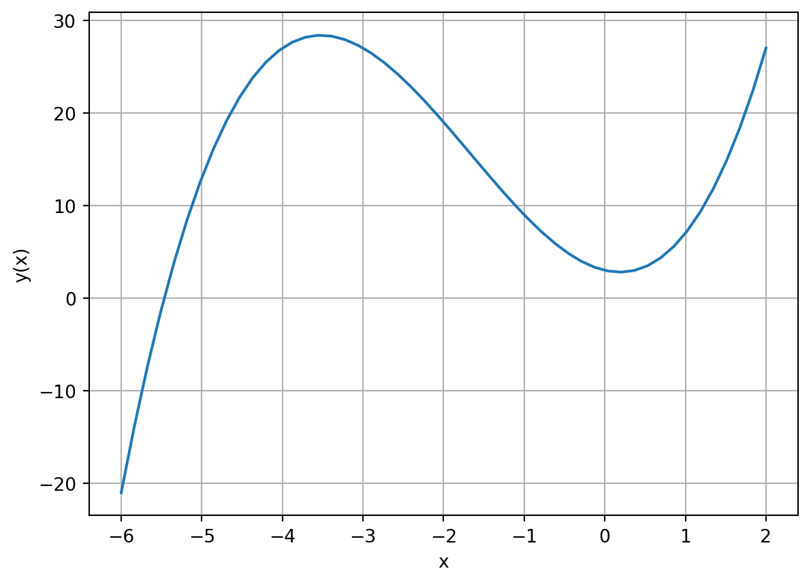
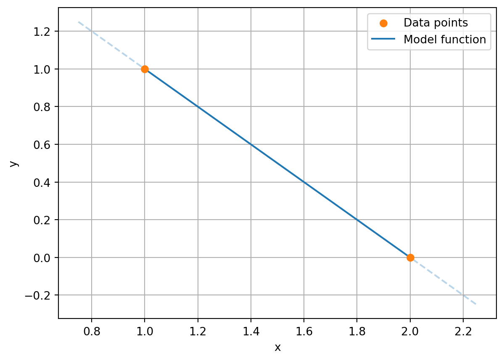
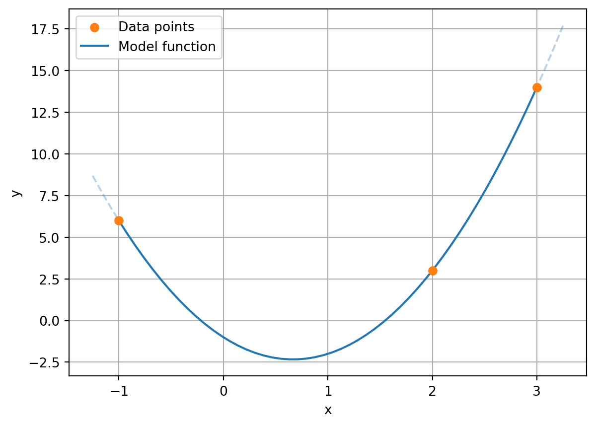
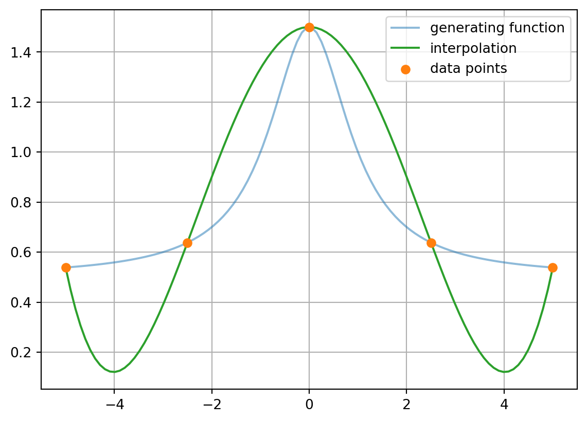
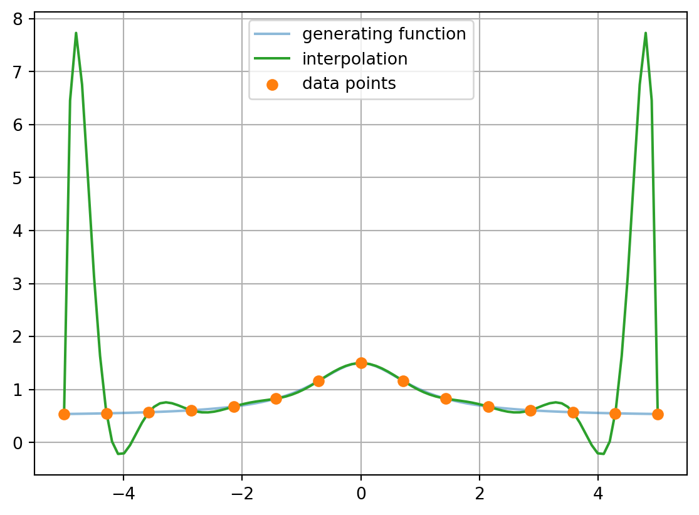

P = np.array([3, -2, 5, 1])
print(P)[ 3 -2 5 1]What to do when values are missing? In many datasets, there are gaps – for example, because measurements were only taken at specific points. Interpolation is a method that allows us to estimate intermediate values, i.e., values within a known range.
In contrast, extrapolation attempts to predict values outside the known range – which is generally associated with greater uncertainty.
In interpolation, we look for a model function that exactly represents the measured data.
The goal of data modeling is to represent a set of data through a functional relationship. Data from experiments or simulations can be heavily noisy and unsuitable for further processing. A smoothing function can greatly simplify the dataset. Alternatively, if there are only a few data points, the intermediate values must be determined by a function.
In general, data modeling can be formalized as the following problem:
One possible approach is to represent the model function as a sum of \(m\) basis functions \(\phi_i(x)\) with coefficients \(\beta_i\):
\[ y(x) = \sum_{i=1}^{m}\beta_i \cdot \phi_i(x) = \beta_1\cdot \phi_1(x) + \cdots + \beta_m\cdot \phi_m(x) \]
The coefficients \(\beta_i\) must be determined such that \(y(x)\) approximates the measurement points as closely as possible – or even exactly.
As a measure of distance between a model function and the data points, the L2 norm can be used. It is defined as
\[ || y(x) - (x_i, y_i) ||_2 = \sum_{i=1}^n \left(y(x_i) - y_i\right)^2 \quad . \]
Such a norm provides a measure of the quality of an approximation: the smaller the distance, the better the quality. This allows for finding optimal coefficients and is, for example, used in the least squares method, where a set of coefficients is sought that minimizes the L2 norm.
In many practical applications, polynomials are assumed as basis functions for the model function. Advantages of polynomials:
An example of a polynomial basis:
\[ \phi_1(x)=1,\quad \phi_2(x)=x,\quad \phi_3(x)=x^2,\quad \cdots,\quad \phi_m =x^{m-1} \]
Polynomials \(P(x)\) are functions in the form of a sum of power functions with natural number exponents \((x^i, i \in \mathbb{N})\) and corresponding coefficients \(a_i\):
\[ P(x) = \sum_{i=0}^n a_i x^i = a_n x^n + a_{n-1} x^{n-1} + \cdots + a_2 x^2 + a_1 x + a_0, \quad i, n \in \mathbb{N}, a_i \in \mathbb{R} \]
In the NumPy module, polynomials are represented by their coefficients. Generally, a polynomial of degree \(n\) is represented by the following array:
[a0, a1, a2, ..., an]For example, for \(P(x) = 3 -2x + 5x^2 + x^3\):
P = np.array([3, -2, 5, 1])
print(P)[ 3 -2 5 1]Functions for evaluating polynomial functions are provided by the numpy.polynomial package, specifically its module numpy.polynomial.polynomial.
import numpy.polynomial.polynomial as polyThe evaluation of a polynomial at a point or an array is done using the poly.polyval(x, c) function. This calculates the function values for the values passed in x using the function parameters c.
x = 1
y = poly.polyval(x, P)
print(f"P(x={x}) = {y}")P(x=1) = 7.0x = np.array([-1, 0, 1])
y = poly.polyval(x, P)
print(f"P(x={x}) = {y}")P(x=[-1 0 1]) = [9. 3. 7.]The Matplotlib package can be used for graphical representation in the range \(x \in [-6, 2]\).
# Generate 50 points between -6 and 2
x = np.linspace(-6, 2, 50)
# Evaluate the polynomial P at points x
y = poly.polyval(x, P)
# Plot the polynomial
plt.plot(x, y)
plt.xlabel('x')
plt.ylabel('y(x)')
plt.grid()
# Display the plot
plt.show()
To find the roots of a polynomial, the function poly.polyroots() can be used. For the polynomial above, the following roots can be determined.
roots = poly.polyroots(P)
# direct output of the array
print("Roots: ")
print(roots)Roots:
[-5.46628038+0.j 0.23314019-0.703182j 0.23314019+0.703182j]print("Roots: ")
# nicer display of the array
for i, root in enumerate(roots):
if root.imag == 0:
print(f" x_{i+1} = {root.real:.2}")
else:
print(f" x_{i+1} = {root.real:.2} {root.imag:+.2}i")Roots:
x_1 = -5.5
x_2 = 0.23 -0.7i
x_3 = 0.23 +0.7iIn this example, two of the roots are complex. A complex number \(z\) in Python is represented as the sum of its real part (\(Re\)) and imaginary part (\(Im\)). The latter is indicated by a trailing j, the imaginary unit.
\[ z = Re(z) + Im(z)j \]
The roots can also be used to represent the polynomial alternatively. If \(x_i\) are the \(n\) roots, then the \(n\)-th degree polynomial is described by the following product:
\[ P(x) = \prod_{i=1}^n \left(x - x_i\right) = (x - x_1)\cdot (x - x_2) \cdot \cdots \cdot (x - x_n) \]
For example, if 1 and 2 are the roots of a polynomial, then it is:
\[ P(x) = (x - 1)(x - 2) = 2 - 3x + x^2 \]
The function poly.polyfromroots(roots) can determine the polynomial coefficients from the roots. Based on the example above, the function call would be:
roots = [1, 2]
coefficients = poly.polyfromroots(roots)
print("Roots:", roots)
print("Coefficients:", coefficients)Roots: [1, 2]
Coefficients: [ 2. -3. 1.]The module numpy.polynomial.polynomial provides many convenient functions for working with polynomials. There are also functions for adding, multiplying, differentiating, or integrating polynomials. An overview can be found in the NumPy documentation.
Interpolation is a method to construct data points between given measurements. A function is sought that exactly matches all measurement points, which is equivalent to the L2-norm between the function and the points being zero. For example, two points can be interpolated with a straight line.
That is, for two measurement pairs \((x_1, y_1)\) and \((x_2, y_2)\) with \(x_1 \neq x_2\), there exists a set of coefficients such that the L2-norm between the points and the model function
\[ y(x) = \beta_0 + \beta_1 x \]
vanishes.
# Example data from y(x) = 2 - x
N = 50
dx = 0.25
def func(x):
return 2 - x
x = np.array([1, 2])
y = func(x)
plt.scatter(x, y, color='C1', label="Data points", zorder=3)
x_model = np.linspace(np.min(x), np.max(x), N)
plt.plot(x_model, func(x_model), color='C0', label="Model function")
x_line = np.linspace(np.min(x)-dx, np.max(x)+dx, N)
plt.plot(x_line, func(x_line), '--', alpha=0.3, color='C0')
plt.xlabel("x")
plt.ylabel("y")
plt.legend()
plt.grid()
plt.show()
For three data points, a second-degree polynomial is used to exactly capture the points.
\[ y(x) = \beta_0 + \beta_1 x + \beta_2 x^2 \]
# Example data from y(x) = -1 - 4x + 3x^2
N = 50
dx = 0.25
def func(x):
return -1 - 4*x + 3*x**2
x = np.array([-1, 2, 3])
y = func(x)
plt.scatter(x, y, color='C1', label="Data points", zorder=3)
x_model = np.linspace(np.min(x), np.max(x), N)
plt.plot(x_model, func(x_model), color='C0', label="Model function")
x_line = np.linspace(np.min(x)-dx, np.max(x)+dx, N)
plt.plot(x_line, func(x_line), '--', alpha=0.3, color='C0')
plt.xlabel("x")
plt.ylabel("y")
plt.legend()
plt.grid()
plt.show()
This can be generalized: \(n\) data points can be exactly represented by a polynomial of degree (\(n-1\)). Finding the appropriate coefficients is the Lagrange interpolation problem. For the desired polynomial \(P(x)\), it holds that:
\[ P(x_i) = y_i \quad i = 1, \dots, n \]
The existence and uniqueness of such a polynomial can be proven. The polynomial is given by:
\[ P(x) = \sum_{i=1}^n y_i I_i(x) \] \[ \text{with}\quad I_i(x) = \prod_{j=1, i\neq j}^n \frac{x-x_j}{x_i - x_j} \]
Alternatively, a system of equations defined by a polynomial basis \(\phi_i(x)\) can be solved. For each of the \(n\) point pairs, we have:
\[ y(x_i) = \sum_{i=1}^{m}\beta_i \cdot \phi_i(x_i) = \beta_1\cdot \phi_1(x_i) + \cdots + \beta_m\cdot \phi_m(x_i) = y_i \]
The general system of equations is
\[ \left( \begin{matrix} \phi_1(x_1) & \phi_2(x_1) & \cdots & \phi_m(x_1) \\ \phi_1(x_2) & \phi_2(x_2) & \cdots & \phi_m(x_2) \\ \vdots &\vdots & \ddots & \vdots \\ \phi_1(x_n) & \phi_2(x_n) & \cdots & \phi_m(x_n) \\ \end{matrix}\right). \left( \begin{matrix} \beta_1 \\ \beta_2 \\ \vdots \\ \beta_m \\ \end{matrix} \right) = \left( \begin{matrix} y_1 \\ y_2 \\ \vdots \\ y_n \\ \end{matrix} \right) \]
and using the polynomial basis
\[ \underbrace{\left( \begin{matrix} 1 & x_1 & \cdots & x_1^{n-1} \\ 1 & x_2 & \cdots & x_2^{n-1} \\ \vdots &\vdots & \ddots & \vdots \\ 1 & x_n & \cdots & x_n^{n-1} \\ \end{matrix}\right)}_{V}. \left( \begin{matrix} \beta_1 \\ \beta_2 \\ \vdots \\ \beta_m \\ \end{matrix} \right) = \left( \begin{matrix} y_1 \\ y_2 \\ \vdots \\ y_n \\ \end{matrix} \right) \]
The matrix \(V\) is called the Vandermonde matrix and can be solved exactly for \(m=n\) if \(x_i \neq x_j\) for all \(i, j\) with \(i\neq j\).
In Python, the interpolation problem can be solved with the function numpy.polynomial.polynomial.polyfit(), which we can call after importing the module as poly.polyfit(). The following example demonstrates its use.
The data points in the example follow the function \(f(x)\), which is only used to generate the data points:
\[ f(x) = \frac{1}{2} + \frac{1}{1+x^2}\]
First, we generate the data points.
def func(x):
return 0.5 + 1/(1 + x**2)xmin = -5
xmax = 5
x = np.linspace(xmin, xmax, 100)
y = func(x)n = 5
xi = np.linspace(xmin, xmax, n)
yi = func(xi)Now we perform the interpolation for 5 and 15 data points
P = poly.polyfit(xi, yi, n-1)
print("Interpolation coefficients:")
print(P)Interpolation coefficients:
[ 1.50000000e+00 -1.12346671e-16 -1.71087533e-01 9.52864368e-18
5.30503979e-03]plt.plot(x, y, color='C0', alpha=0.5, label='generating function')
plt.plot(x, poly.polyval(x, P), color='C2', label='interpolation')
plt.scatter(xi, yi, color='C1', label='data points', zorder=3)
plt.legend()
plt.grid()
plt.show()
n = 15
xi = np.linspace(xmin, xmax, n)
yi = func(xi)
P = poly.polyfit(xi, yi, n-1)
plt.plot(x, y, color='C0', alpha=0.5, label='generating function')
plt.plot(x, poly.polyval(x, P), color='C2', label='interpolation')
plt.scatter(xi, yi, color='C1', label='data points', zorder=3)
plt.legend()
plt.grid()
plt.show()
Interpolation always satisfies the required condition \(y(x_i) = y_i\). However, high-degree polynomials often lead to unrealistic results. Large oscillations occur, which become more pronounced as the degree increases.